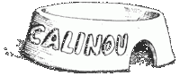

|
|
GaspodeGaspode | |
Petit, nerveux, les pattes, plutôt gris mais parsemé de taches marron, noires et blanches sur le pourtour. Gaspode à des puces, une sclérose des coussinets, des pellicules, les yeux jaunes et encroûtés, de l'arthrite, les dents gâtées, une haleine à assommer un ours,, et c'est probablement le seul chien à avoir contracté le liche-aine, une affection que n'attrapent que les brebis. En fait, il héberge tellement de maladies canines qu'un nuage de poussière l'entoure. Son nom viendrait du «célèbre» Gaspode qui avait appartenu à un vieillard d'Ankh bien des années plutôt. Quand son maître était mort et qu'on l'avait enterré, le chien s'était couché sur sa tombe et mis à hurler sans arrêt pendant deux semaines. Il grognait sur tous ceux qui s'approchaient. Et puis il est mort. On vit à ce moment là un modèle de loyauté canine jusqu'à ce q'on découvre que la pierre tombale s'était refermée sur sa queue. Quant il était un chiot, Gaspode fut jeté à l'eau dans un sac lesté d'une brique. Le terme "eau" consistant en fait dans le fleuve Ankh, il n'eut qu'à regagner le rive en marchant à l'intérieur du sac entretenant durant plusieurs jours une relation trouble avec la brique. Gaspode est affecté par le même conflit que tous ses congénères canins. D'un côté, il désire par-dessus tout appartenir à quelqu'un, avoir un maître et, d'une manière générale, un coin chaud, bien à l'abri devant la cheminée ; mais d'un autre côté, il se révolte contre l'idée d'appartenance et de limitation de sa liberté de roder, de manger et de se rouler dans ce qui lui chante. Seulement, lui est conscient de ce conflit, d'où son drame. Il parle aussi, seulement les humains ne l'écoutent pas : tout le monde sait bien que les chiens ne parlent pas... Gaspode se gratte dans : Les Zinzins d'Olive-Oued, Le Guet de Orfèvres, Pieds d'Argile. |